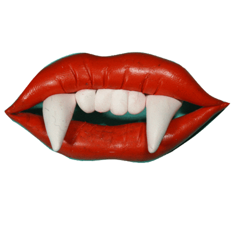

Un hombre decidió pasar el día explorando unos bosques que nunca había visitado.
Cuando empezó a anochecer, su sentido de orientación ya no funcionaba bien y cada vez se
empezó a adentrar más y más en el bosque.
Tras horas andando sin rumbo y de noche, encontró una cabaña entre varios árboles.
Al golpear la puerta, no recibió respuesta y como estaba abierta decidió
Al ver la cama, pensó que lo mejor sería ir a dormir y si alguien venía explicar lo que había pasado.
Una vez estirado, se dio cuenta de que había muchas pinturas extrañas: eran rostros deformados con
ojos rojos que le miraban.
Intentó ignorarlos, cerró los ojos y se durmió.
A la mañana siguiente, despertó aterrorizado al darse cuenta de que no había pinturas en la cabaña,
solo ventanas…
Are you ready too meet evil?
Don't touch the terrorify pumpkin!!!
